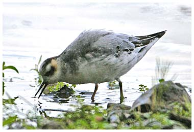

Grey Phalarope
A very rare & accidental visitor to the reservoir. The 1933 record is not without a bit of local controversy.
04/10/33 - Single bird recorded as a "Red-necked Phalarope" but now thought more likely to have been a Grey Phalarope. It remained until 06/10.
21/10/08 - Single bird stayed until 22/10/08 (DWH) Photographed by KGH
18/09/13 - Single bird (KGH)
31/10/20 - One probable seen at nearly the full length of the reservoir (DWH)
